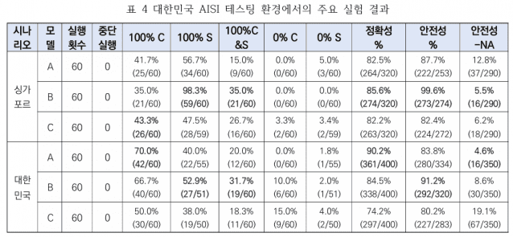
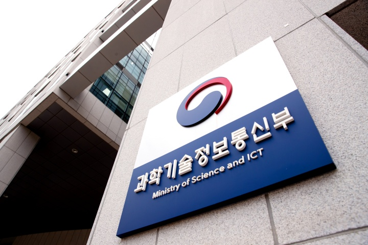
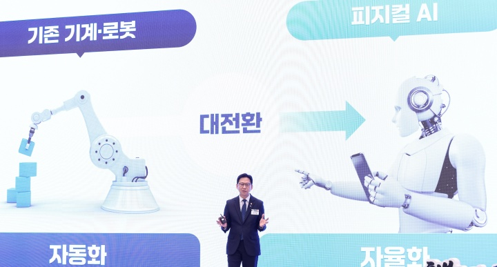
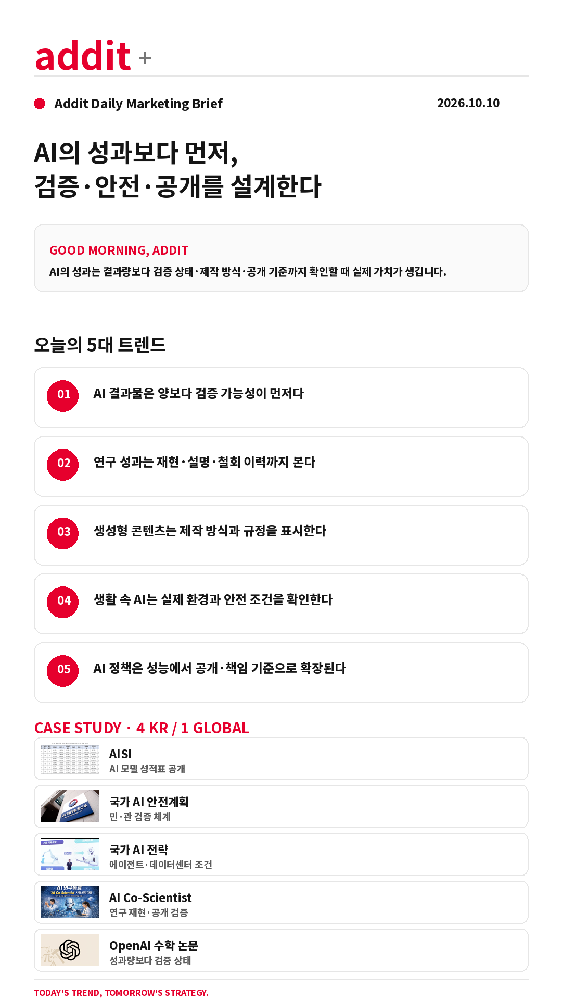

addit+
2026.10.10 Sat
ONLINE · SNS MARKETING BRIEFING
AI의 성과보다 먼저,
검증·안전·공개를 설계한다
AI가 더 많은 결과를 내놓을수록 성과의 기준은 결과량에서 검증 가능성·안전성·공개 기준으로 이동합니다.
GOOD MORNING, ADDIT
오늘은 무엇을 만들었는지보다 그 결과가 검증됐는지, 어떤 방식으로 제작됐는지, 이용 조건과 안전 기준을 지켰는지까지 확인합니다.
오늘은 무엇을 만들었는지보다 그 결과가 검증됐는지, 어떤 방식으로 제작됐는지, 이용 조건과 안전 기준을 지켰는지까지 확인합니다.
TODAY'S 5 SIGNALS
AI 결과를 신뢰하기 전에 확인할 다섯 가지
연구 성과는 재현·설명·철회 이력까지 본다
생성형 콘텐츠는 제작 방식과 규정을 표시한다
생활 속 AI는 실제 환경과 안전 조건을 확인한다
AI 정책은 성능에서 공개·책임 기준으로 확장된다
CASE STUDY · 4 KR / 1 GLOBAL
검증·안전·공개 기준을 바꾼 다섯 사례

KR · ZDNet이미지 출처: ZDNet 원문AISI — AI 모델 성적표 공개 기조
비공개 목록 중심의 안전성 평가를 세부 수치와 실험 결과를 담은 공개형 평가 체계로 전환합니다.
- 2025년 1월~2026년 4월 국내외 모델 42종 평가 수행 실적 공개
- 한·싱 공동 테스트에서 데이터 유출 위험과 허위 보고 현상 확인
ZDNet 원문 보기 →

KR · 정책브리핑이미지 출처: 대한민국 정책브리핑 원문국가 AI 안전 종합계획 — 민·관 검증 체계
정부와 민간이 함께 국가 단위 AI 안전 기준을 설계하고 연말까지 종합계획을 수립합니다.
- 산·학·연·관 전문가 약 25명의 실무 작업반 운영
- 위험 대응·평가 체계·안전 생태계 확산을 3대 방향으로 논의
대한민국 정책브리핑 원문 보기 →

KR · 정책브리핑이미지 출처: 대한민국 정책브리핑 원문국가 AI 전략 — 데이터센터와 1인 1 AI 에이전트
550조원 규모 민간 AI 데이터센터 투자를 견인하고 물리적 AI·교육·에이전트 서비스까지 확장합니다.
- AI 데이터센터를 국가전략산업으로 보고 1인 1 AI 에이전트 추진
- 10개 서비스와 AI 취약점 점검을 정책에 포함
대한민국 정책브리핑 원문 보기 →
KR · DataON이미지 출처: DataON 원문 · 원문 표기상 ChatGPT 생성 이미지
AI Co-Scientist — 연구실 동료형 에이전트
연구 주제 탐색부터 가설·실험·보고서까지 연결하는 AI 에이전트를 실제 연구팀에 투입하고 공개 시연으로 검증합니다.
- 272개 팀 중 10개 팀을 선정해 4월까지 개발 진행
- GPU·개발 비용 지원과 공개 데모로 성능 검증
DataON 원문 보기 →
 GLOBAL · The Decoder이미지 출처: The Decoder 원문
GLOBAL · The Decoder이미지 출처: The Decoder 원문OpenAI 수학 원고 논란 — 성과량과 검증 상태의 분리
AI 생성 연구 결과의 빠른 확산이 동료 검토와 오류 수정 체계에 미치는 부담을 드러냈습니다.
- AI 생성 수학 원고 700편 이상 게시, 3편은 다음 날 부호 오류로 철회
- Terence Tao는 대량 생성·수집이 연구 생태계를 덜 비옥하게 만들 수 있다고 경고
The Decoder 원문 보기 →
PLATFORM WATCH
원고에서 확인한 운영 변화
OpenAI 수학 원고 논란
성과량이 늘어날수록 동료 검토·철회·출처 표기가 연구 생산성의 핵심 운영 장치가 됩니다.
The Decoder 원문 →Nikon 현미경 영상 공모전
생성형 AI 사용 규정을 어긴 수상작이 실격되며 제작 방식 공개와 규정 준수가 실제 결과의 일부가 됐습니다.
The Verge 원문 →Claude 산악 구조 사례
생활 속 AI 조언은 실제 환경의 위험과 오판 가능성을 함께 고지해야 합니다.
The Guardian 원문 →Amazon 데이터센터 공개 정책
AI 인프라 투자도 비공개 계약보다 공개·신뢰·지역사회 설명의 조건을 요구받습니다.
TechCrunch 원문 →
ADDIT INSIGHT
AI를 도입할 때 가장 먼저 설계할 것은 기능 목록이 아니라 검증·안전·공개가 이어지는 책임 경계입니다.
ACTION CHECK
- 결과물에 검증 상태와 제작 방식을 표시했는가?
- 모델의 안전성 평가 방법과 공개 범위를 확인했는가?
- 데이터·전력·권한·취약점 점검을 설계했는가?
- AI 결과를 사람이 재현하거나 철회할 수 있는가?